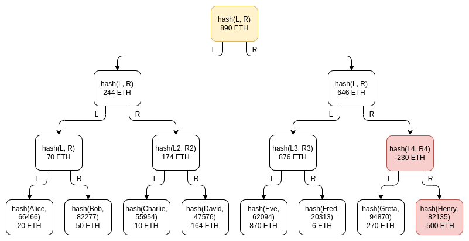
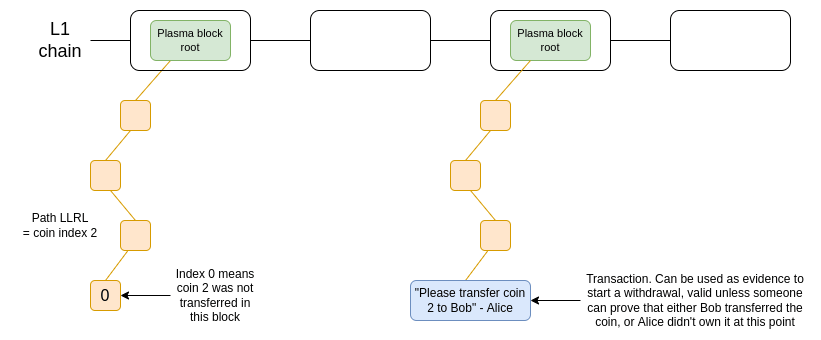
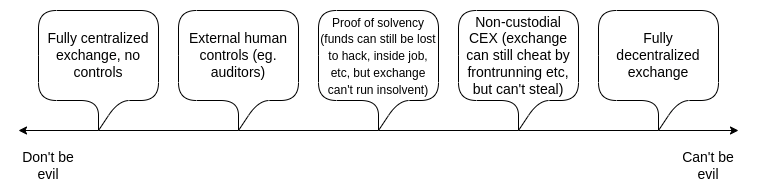
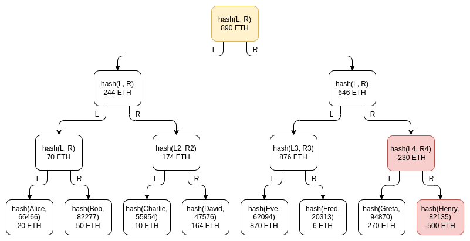
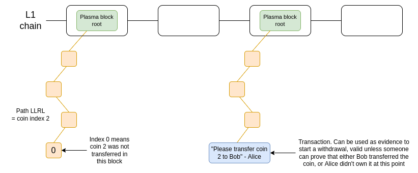
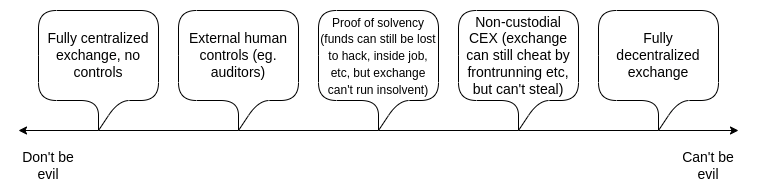

Having a safe CEX: proof of solvency and beyond
2022 Nov 19
See all posts
Having a safe CEX: proof of solvency and beyond
Special thanks to Balaji Srinivasan, and Coinbase, Kraken and
Binance staff for discussion.
Every time a major centralized exchange blows up, a common question
that comes up is whether or not we can use cryptographic techniques to
solve the problem. Rather than relying solely on "fiat" methods like
government licenses, auditors and examining the corporate governance and
the backgrounds of the individuals running the exchange, exchanges could
create cryptographic proofs that show that the funds they hold
on-chain are enough to cover their liabilities to their users.
Even more ambitiously, an exchange could build a system where it
can't withdraw a depositor's funds at all without their consent.
Potentially, we could explore the entire spectrum between the "don't be
evil" aspiring-good-guy CEX and the "can't be evil", but for-now
inefficient and privacy-leaking, on-chain DEX. This post will get into
the history of attempts to move exchanges one or two steps closer to
trustlessness, the limitations of these techniques, and some newer and
more powerful ideas that rely on ZK-SNARKs and other advanced
technologies.
Balance
lists and Merkle trees: old-school proof-of-solvency
The earliest attempts by exchanges to try to cryptographically prove
that they are not cheating their users go back quite far. In 2011,
then-largest Bitcoin exchange MtGox proved that they had funds by
sending a
transaction that moved 424242
BTC to a pre-announced address. In 2013, discussions
started on how to solve the other side of the problem: proving the
total size of customers' deposits. If you prove that customers' deposits
equal X ("proof of liabilities"), and prove ownership
of the private keys of X coins ("proof of assets"),
then you have a proof of solvency: you've proven the
exchange has the funds to pay back all of its depositors.
The simplest way to prove deposits is to simply publish a list of
(username, balance) pairs. Each user can check that their
balance is included in the list, and anyone can check the full list to
see that (i) every balance is non-negative, and (ii) the total sum is
the claimed amount. Of course, this breaks privacy, so we can change the
scheme a little bit: publish a list of
(hash(username, salt), balance) pairs, and send each user
privately their salt
value. But even this leaks balances, and it leaks the pattern of changes
in balances. The desire to preserve privacy brings
us to the next
invention: the Merkle tree technique.

Green: Charlie's node. Blue: nodes Charlie will receive as part of
his proof. Yellow: root node, publicly shown to everyone.
The Merkle tree technique consists of putting the table of customers'
balances into a Merkle sum tree. In a Merkle sum tree,
each node is a (balance, hash) pair. The bottom-layer leaf
nodes represent the balances and salted username hashes of individual
customers. In each higher-layer node, the balance is the sum of the two
balances below, and the hash is the hash of the two nodes below. A
Merkle sum proof, like a Merkle proof, is a "branch" of the tree,
consisting of the sister nodes along the path from a leaf to the
root.
The exchange would send each user a Merkle sum proof of their
balance. The user would then have a guarantee that their balance is
correctly included as part of the total. A simple example code
implementation can be found here.
# The function for computing a parent node given two child nodes
def combine_tree_nodes(L, R):
L_hash, L_balance = L
R_hash, R_balance = R
assert L_balance >= 0 and R_balance >= 0
new_node_hash = hash(
L_hash + L_balance.to_bytes(32, 'big') +
R_hash + R_balance.to_bytes(32, 'big')
)
return (new_node_hash, L_balance + R_balance)
# Builds a full Merkle tree. Stored in flattened form where
# node i is the parent of nodes 2i and 2i+1
def build_merkle_sum_tree(user_table: "List[(username, salt, balance)]"):
tree_size = get_next_power_of_2(len(user_table))
tree = (
[None] * tree_size +
[userdata_to_leaf(*user) for user in user_table] +
[EMPTY_LEAF for _ in range(tree_size - len(user_table))]
)
for i in range(tree_size - 1, 0, -1):
tree[i] = combine_tree_nodes(tree[i*2], tree[i*2+1])
return tree
# Root of a tree is stored at index 1 in the flattened form
def get_root(tree):
return tree[1]
# Gets a proof for a node at a particular index
def get_proof(tree, index):
branch_length = log2(len(tree)) - 1
# ^ = bitwise xor, x ^ 1 = sister node of x
index_in_tree = index + len(tree) // 2
return [tree[(index_in_tree // 2**i) ^ 1] for i in range(branch_length)]
# Verifies a proof (duh)
def verify_proof(username, salt, balance, index, user_table_size, root, proof):
leaf = userdata_to_leaf(username, salt, balance)
branch_length = log2(get_next_power_of_2(user_table_size)) - 1
for i in range(branch_length):
if index & (2**i):
leaf = combine_tree_nodes(proof[i], leaf)
else:
leaf = combine_tree_nodes(leaf, proof[i])
return leaf == root
Privacy leakage in this design is much lower than with a fully public
list, and it can be decreased further by shuffling the branches each
time a root is published, but some privacy leakage is still there:
Charlie learns that someone has a balance of 164 ETH,
some two users have balances that add up to 70 ETH, etc. An
attacker that controls many accounts could still potentially learn a
significant amount about the exchange's users.
One important subtlety of the scheme is the possibility of
negative balances: what if an exchange that has 1390 ETH of
customer balances but only 890 ETH in reserves tries to make up the
difference by adding a -500 ETH balance under a fake account somewhere
in the tree? It turns out that this possibility does not break the
scheme, though this is the reason why we specifically need a Merkle sum
tree and not a regular Merkle tree. Suppose that Henry is the fake
account controlled by the exchange, and the exchange puts -500 ETH
there:

Greta's proof verification would fail: the exchange would have to
give her Henry's -500 ETH node, which she would reject as invalid. Eve
and Fred's proof verification would also fail, because the
intermediate node above Henry has -230 total ETH, and so is also
invalid! To get away with the theft, the exchange would have to hope
that nobody in the entire right half of the tree checks their balance
proof.
If the exchange can identify 500 ETH worth of users that they are
confident will either not bother to check the proof, or will not be
believed when they complain that they never received a proof, they could
get away with the theft. But then the exchange could also just exclude
those users from the tree and have the same effect. Hence, the Merkle
tree technique is basically as good as a proof-of-liabilities scheme can
be, if only achieving a proof of liabilities is the goal. But its
privacy properties are still not ideal. You can go a little bit further
by using Merkle trees in more clever ways, like making
each satoshi or wei a separate leaf, but ultimately with more modern
tech there are even better ways to do it.
Improving
privacy and robustness with ZK-SNARKs
ZK-SNARKs are a powerful technology. ZK-SNARKs may be to cryptography
what transformers
are to AI: a general-purpose technology that is so powerful that it will
completely steamroll a whole bunch of application-specific techniques
for a whole bunch of problems that were developed in the decades prior.
And so, of course, we can use ZK-SNARKs to greatly simplify and improve
privacy in proof-of-liabilities protocols.
The simplest thing that we can do is put all users' deposits into a
Merkle tree (or, even simpler, a KZG
commitment), and use a ZK-SNARK to prove that all balances in the
tree are non-negative and add up to some claimed value. If we add a
layer of hashing for privacy, the Merkle branch (or KZG proof) given to
each user would reveal nothing about the balance of any other
user.

Using KZG commitments is one way to avoid privacy leakage, as there
is no need to provide "sister nodes" as proofs, and a simple ZK-SNARK
can be used to prove the sum of the balances and that each balance is
non-negative.
We can prove the sum and non-negativity of balances in the above KZG
with a special-purpose ZK-SNARK. Here is one simple example way to do
this. We introduce an auxiliary polynomial \(I(x)\), which "builds up the bits" of each
balance (we assume for the sake of example that balances are under \(2^{15}\)) and where every 16th position
tracks a running total with an offset so that it sums to zero only if
the actual total matches the declared total. If \(z\) is an order-128 root of unity, we might
prove the equations:
\(I(z^{16x}) = 0\)
\(I(z^{16x + 14}) =
P(\omega^{2x+1})\)
\(I(z^{i}) - 2*I(z^{i-1}) \in \{0, 1\}\ \
if\ \ i\ \ mod\ 16 \not \in \{0, 15\}\)
\(I(z^{16*x + 15}) = I(z^{16*x-1}) +
I(z^{16*x+14}) - \frac{the\ declared\ total}{user\ count}\)
The first values of a valid setting for \(I(x)\) would be 0 0 0 0
0 0 0 0 0 0 1 2 5 10 20 -165
0 0 0 0 0 0 0 0 0 1 3 6
12 25 50 -300 ...
See here
and here
in my post on ZK-SNARKs
for further explanation of how to convert equations like these into a
polynomial check and then into a ZK-SNARK. This isn't an optimal
protocol, but it does show how these days these kinds of cryptographic
proofs are not that spooky!
With only a few extra equations, constraint systems like this can be
adapted to more complex settings. For example, in a leverage trading
system, an individual users having negative balances is acceptable but
only if they have enough other assets to cover the funds with some
collateralization margin. A SNARK could be used to prove this more
complicated constraint, reassuring users that the exchange is not
risking their funds by secretly
exempting other users from the rules.
In the longer-term future, this kind of ZK proof of liabilities could
perhaps be used not just for customer deposits at exchanges, but for
lending more broadly. Anyone taking out a loan would put a record into a
polynomial or a tree containing that loan, and the root of that
structure would get published on-chain. This would let anyone seeking a
loan ZK-prove to the lender that they have not yet taken out too many
other loans. Eventually, legal innovation could even make loans that
have been committed to in this way higher-priority than loans that have
not. This leads us in exactly the same direction as one of the ideas
that was discussed in the "Decentralized
Society: Finding Web3's Soul" paper: a general notion of negative
reputation or encumberments on-chain through some form of "soulbound
tokens".
Proof of assets
The simplest version of proof of assets is the protocol that we saw
above: to prove that you hold X coins, you simply move X coins around at
some pre-agreed time or in a transaction where the data field contains
the words "these funds belong to Binance". To avoid paying transaction
fees, you could sign an off-chain message instead; both Bitcoin and Ethereum
have standards for off-chain
signed messages.
There are two practical problems with this simple proof-of-assets
technique:
- Dealing with cold storage
- Collateral dual-use
For safety reasons, most exchanges keep the great majority of
customer funds in "cold storage": on offline computers, where
transactions need to be signed and carried over onto the internet
manually. Literal air-gapping is common: a cold storage setup that I
used to use for personal funds involved a permanently offline computer
generating a QR code containing the signed transaction, which I would
scan from my phone. Because of the high values at stake, the security
protocols used by exchanges are crazier still, and often involve using
multi-party computation between several devices to further reduce the
chance of a hack against a single device compromising a key. Given this
kind of setup, making even a single extra message to prove control of an
address is an expensive operation!
There are several paths that an exchange can take:
- Keep a few public long-term-use addresses. The
exchange would generate a few addresses, publish a proof of each address
once to prove ownership, and then use those addresses
repeatedly. This is by far the simplest option, though it does add some
constraints in how to preserve security and privacy.
- Have many addresses, prove a few randomly. The
exchange would have many addresses, perhaps even using each address only
once and retiring it after a single transaction. In this case, the
exchange may have a protocol where from time to time a few addresses get
randomly selected and must be "opened" to prove ownership. Some
exchanges already do something like this with an auditor, but in
principle this technique could be turned into a fully automated
procedure.
- More complicated ZKP options. For example, an
exchange could set all of its addresses to be 1-of-2 multisigs, where
one of the keys is different per address, and the other is a blinded
version of some "grand" emergency backup key stored in some complicated
but very high-security way, eg. a 12-of-16 multisig. To preserve privacy
and avoid revealing the entire set of its addresses, the exchange could
even run a zero knowledge proof over the blockchain where it proves the
total balance of all addresses on chain that have this format.
The other major issue is guarding against collateral dual-use.
Shuttling collateral back and forth between each other to do proof of
reserves is something that exchanges could
easily do, and would allow them to pretend to be solvent when they
actually are not. Ideally, proof of solvency would be done in real time,
with a proof that updates after every block. If this is impractical, the
next best thing would be to coordinate on a fixed schedule between the
different exchanges, eg. proving reserves at 1400 UTC every Tuesday.
One final issue is: can you do proof-of-assets on
fiat? Exchanges don't just hold cryptocurrency, they also hold
fiat currency within the banking system. Here, the answer is: yes, but
such a procedure would inevitably rely on "fiat" trust models: the bank
itself can attest to balances, auditors can attest to balance sheets,
etc. Given that fiat is not cryptographically verifiable, this is the
best that can be done within that framework, but it's still worth
doing.
An alternative approach would be to cleanly separate between one
entity that runs the exchange and deals with asset-backed stablecoins
like USDC, and another entity (USDC itself) that handles the cash-in and
cash-out process for moving between crypto and traditional banking
systems. Because the "liabilities" of USDC are just on-chain ERC20
tokens, proof of liabilities comes "for free" and only proof of assets
is required.
Plasma and
validiums: can we make CEXes non-custodial?
Suppose that we want to go further: we don't want to just prove that
the exchange has the funds to pay back its users. Rather, we
want to prevent the exchange from stealing users' funds
completely.
The first major attempt at this was Plasma, a
scaling solution that was popular in Ethereum research circles in 2017
and 2018. Plasma works by splitting up the balance into a set of
individual "coins", where each coin is assigned an index and lives in a
particular position in the Merkle tree of a Plasma block. Making a valid
transfer of a coin requires putting a transaction into the correct
position of a tree whose root gets published on-chain.

Oversimplified diagram of one version of Plasma. Coins are held in a
smart contract that enforces the rules of the Plasma protocol at
withdrawal time.
OmiseGo attempted to make a decentralized exchange based on this
protocol, but since then they have pivoted to other ideas - as has, for
that matter, Plasma Group itself, which is now the optimistic EVM rollup
project Optimism.
It's not worth looking at the technical limitations of Plasma as
conceived in 2018 (eg. proving
coin defragmentation) as some kind of morality tale about the whole
concept. Since the peak of Plasma discourse in 2018, ZK-SNARKs have
become much more viable for scaling-related use cases, and as we have
said above, ZK-SNARKs change everything.
The more modern version of the Plasma idea is what Starkware calls a
validium:
basically the same as a ZK-rollup, except where data is held off-chain.
This construction could be used for a lot of use cases, conceivably
anything where a centralized server needs to run some code and prove
that it's executing code correctly. In a validium, the operator
has no way to steal funds, though depending on the details of
the implementation some quantity of user funds could get stuck
if the operator disappears.
This is all really good: far from CEX vs DEX being a binary, it turns
out that there is a whole spectrum of options, including various forms
of hybrid centralization where you gain some benefits like efficiency
but still have a lot of cryptographic guardrails preventing the
centralized operator from engaging in most forms of abuses.

But it's worth getting to the fundamental issue with the right half
of this design space: dealing with user errors. By far
the most important type of error is: what if a user forgets their
password, loses their devices, gets hacked, or otherwise loses access to
their account?
Exchanges can solve this problem: first e-mail recovery, and if even
that fails, more complicated forms of recovery through KYC. But to be
able to solve such problems, the exchange needs to actually have control
over the coins. In order to have the ability to recover user accounts'
funds for good reasons, exchanges need to have power that could also be
used to steal user accounts' funds for bad reasons. This is an
unavoidable tradeoff.
The ideal long-term solution is to rely on self-custody, in a future
where users have easy access to technologies such as multisig and social recovery
wallets to help deal with emergency situations. But in the short
term, there are two clear alternatives that have clearly distinct
costs and benefits:
| Custodial exchange (eg. Coinbase today) |
User funds may be lost if there is a problem on the exchange
side |
Exchange can help recover account |
| Non-custodial exchange (eg. Uniswap today) |
User can withdraw even if exchange acts maliciously |
User funds may be lost if user screws up |
Another important issue is cross-chain support: exchanges need to
support many different chains, and systems like Plasma and validiums
would need to have code written in different languages to support
different platforms, and cannot be implemented at all on others (notably
Bitcoin) in their current form. In the long-term future, this can
hopefully be fixed with technological upgrades and standardization; in
the short term, however, it's another argument in favor of custodial
exchanges remaining custodial for now.
Conclusions: the
future of better exchanges
In the short term, there are two clear "classes" of exchanges:
custodial exchanges and non-custodial exchanges. Today, the latter
category is just DEXes such as Uniswap, and in the future we may also
see cryptographically "constrained" CEXes where user funds are held in
something like a validium smart contract. We may also see half-custodial
exchanges where we trust them with fiat but not cryptocurrency.
Both types of exchanges will continue to exist, and the easiest
backwards-compatible way to improve the safety of custodial exchanges is
to add proof of reserve. This consists of a combination of proof of
assets and proof of liabilities. There are technical challenges in
making good protocols for both, but we can and should go as far as
possible to make headway in both, and open-source the software and
processes as much as possible so that all exchanges can benefit.
In the longer-term future, my hope is that we move closer and closer
to all exchanges being non-custodial, at least on the crypto side.
Wallet recovery would exist, and there may need to be highly centralized
recovery options for new users dealing with small amounts, as well as
institutions that require such arrangements for legal reasons, but this
can be done at the wallet layer rather than within the exchange itself.
On the fiat side, movement between the traditional banking system and
the crypto ecosystem could be done via cash in / cash out processes
native to asset-backed stablecoins such as USDC. However, it will still
take a while before we can fully get there.
Having a safe CEX: proof of solvency and beyond
2022 Nov 19 See all postsSpecial thanks to Balaji Srinivasan, and Coinbase, Kraken and Binance staff for discussion.
Every time a major centralized exchange blows up, a common question that comes up is whether or not we can use cryptographic techniques to solve the problem. Rather than relying solely on "fiat" methods like government licenses, auditors and examining the corporate governance and the backgrounds of the individuals running the exchange, exchanges could create cryptographic proofs that show that the funds they hold on-chain are enough to cover their liabilities to their users.
Even more ambitiously, an exchange could build a system where it can't withdraw a depositor's funds at all without their consent. Potentially, we could explore the entire spectrum between the "don't be evil" aspiring-good-guy CEX and the "can't be evil", but for-now inefficient and privacy-leaking, on-chain DEX. This post will get into the history of attempts to move exchanges one or two steps closer to trustlessness, the limitations of these techniques, and some newer and more powerful ideas that rely on ZK-SNARKs and other advanced technologies.
Balance lists and Merkle trees: old-school proof-of-solvency
The earliest attempts by exchanges to try to cryptographically prove that they are not cheating their users go back quite far. In 2011, then-largest Bitcoin exchange MtGox proved that they had funds by sending a transaction that moved 424242 BTC to a pre-announced address. In 2013, discussions started on how to solve the other side of the problem: proving the total size of customers' deposits. If you prove that customers' deposits equal X ("proof of liabilities"), and prove ownership of the private keys of X coins ("proof of assets"), then you have a proof of solvency: you've proven the exchange has the funds to pay back all of its depositors.
The simplest way to prove deposits is to simply publish a list of
(username, balance)pairs. Each user can check that their balance is included in the list, and anyone can check the full list to see that (i) every balance is non-negative, and (ii) the total sum is the claimed amount. Of course, this breaks privacy, so we can change the scheme a little bit: publish a list of(hash(username, salt), balance)pairs, and send each user privately theirsaltvalue. But even this leaks balances, and it leaks the pattern of changes in balances. The desire to preserve privacy brings us to the next invention: the Merkle tree technique.Green: Charlie's node. Blue: nodes Charlie will receive as part of his proof. Yellow: root node, publicly shown to everyone.
The Merkle tree technique consists of putting the table of customers' balances into a Merkle sum tree. In a Merkle sum tree, each node is a
(balance, hash)pair. The bottom-layer leaf nodes represent the balances and salted username hashes of individual customers. In each higher-layer node, the balance is the sum of the two balances below, and the hash is the hash of the two nodes below. A Merkle sum proof, like a Merkle proof, is a "branch" of the tree, consisting of the sister nodes along the path from a leaf to the root.The exchange would send each user a Merkle sum proof of their balance. The user would then have a guarantee that their balance is correctly included as part of the total. A simple example code implementation can be found here.
Privacy leakage in this design is much lower than with a fully public list, and it can be decreased further by shuffling the branches each time a root is published, but some privacy leakage is still there: Charlie learns that someone has a balance of 164 ETH, some two users have balances that add up to 70 ETH, etc. An attacker that controls many accounts could still potentially learn a significant amount about the exchange's users.
One important subtlety of the scheme is the possibility of negative balances: what if an exchange that has 1390 ETH of customer balances but only 890 ETH in reserves tries to make up the difference by adding a -500 ETH balance under a fake account somewhere in the tree? It turns out that this possibility does not break the scheme, though this is the reason why we specifically need a Merkle sum tree and not a regular Merkle tree. Suppose that Henry is the fake account controlled by the exchange, and the exchange puts -500 ETH there:

Greta's proof verification would fail: the exchange would have to give her Henry's -500 ETH node, which she would reject as invalid. Eve and Fred's proof verification would also fail, because the intermediate node above Henry has -230 total ETH, and so is also invalid! To get away with the theft, the exchange would have to hope that nobody in the entire right half of the tree checks their balance proof.
If the exchange can identify 500 ETH worth of users that they are confident will either not bother to check the proof, or will not be believed when they complain that they never received a proof, they could get away with the theft. But then the exchange could also just exclude those users from the tree and have the same effect. Hence, the Merkle tree technique is basically as good as a proof-of-liabilities scheme can be, if only achieving a proof of liabilities is the goal. But its privacy properties are still not ideal. You can go a little bit further by using Merkle trees in more clever ways, like making each satoshi or wei a separate leaf, but ultimately with more modern tech there are even better ways to do it.
Improving privacy and robustness with ZK-SNARKs
ZK-SNARKs are a powerful technology. ZK-SNARKs may be to cryptography what transformers are to AI: a general-purpose technology that is so powerful that it will completely steamroll a whole bunch of application-specific techniques for a whole bunch of problems that were developed in the decades prior. And so, of course, we can use ZK-SNARKs to greatly simplify and improve privacy in proof-of-liabilities protocols.
The simplest thing that we can do is put all users' deposits into a Merkle tree (or, even simpler, a KZG commitment), and use a ZK-SNARK to prove that all balances in the tree are non-negative and add up to some claimed value. If we add a layer of hashing for privacy, the Merkle branch (or KZG proof) given to each user would reveal nothing about the balance of any other user.
Using KZG commitments is one way to avoid privacy leakage, as there is no need to provide "sister nodes" as proofs, and a simple ZK-SNARK can be used to prove the sum of the balances and that each balance is non-negative.
We can prove the sum and non-negativity of balances in the above KZG with a special-purpose ZK-SNARK. Here is one simple example way to do this. We introduce an auxiliary polynomial \(I(x)\), which "builds up the bits" of each balance (we assume for the sake of example that balances are under \(2^{15}\)) and where every 16th position tracks a running total with an offset so that it sums to zero only if the actual total matches the declared total. If \(z\) is an order-128 root of unity, we might prove the equations:
\(I(z^{16x}) = 0\)
\(I(z^{16x + 14}) = P(\omega^{2x+1})\)
\(I(z^{i}) - 2*I(z^{i-1}) \in \{0, 1\}\ \ if\ \ i\ \ mod\ 16 \not \in \{0, 15\}\)
\(I(z^{16*x + 15}) = I(z^{16*x-1}) + I(z^{16*x+14}) - \frac{the\ declared\ total}{user\ count}\)
The first values of a valid setting for \(I(x)\) would be
0 0 0 00 0 0 00 0 1 25 10 20 -1650 0 0 00 0 0 00 1 3 612 25 50 -300...See here and here in my post on ZK-SNARKs for further explanation of how to convert equations like these into a polynomial check and then into a ZK-SNARK. This isn't an optimal protocol, but it does show how these days these kinds of cryptographic proofs are not that spooky!
With only a few extra equations, constraint systems like this can be adapted to more complex settings. For example, in a leverage trading system, an individual users having negative balances is acceptable but only if they have enough other assets to cover the funds with some collateralization margin. A SNARK could be used to prove this more complicated constraint, reassuring users that the exchange is not risking their funds by secretly exempting other users from the rules.
In the longer-term future, this kind of ZK proof of liabilities could perhaps be used not just for customer deposits at exchanges, but for lending more broadly. Anyone taking out a loan would put a record into a polynomial or a tree containing that loan, and the root of that structure would get published on-chain. This would let anyone seeking a loan ZK-prove to the lender that they have not yet taken out too many other loans. Eventually, legal innovation could even make loans that have been committed to in this way higher-priority than loans that have not. This leads us in exactly the same direction as one of the ideas that was discussed in the "Decentralized Society: Finding Web3's Soul" paper: a general notion of negative reputation or encumberments on-chain through some form of "soulbound tokens".
Proof of assets
The simplest version of proof of assets is the protocol that we saw above: to prove that you hold X coins, you simply move X coins around at some pre-agreed time or in a transaction where the data field contains the words "these funds belong to Binance". To avoid paying transaction fees, you could sign an off-chain message instead; both Bitcoin and Ethereum have standards for off-chain signed messages.
There are two practical problems with this simple proof-of-assets technique:
For safety reasons, most exchanges keep the great majority of customer funds in "cold storage": on offline computers, where transactions need to be signed and carried over onto the internet manually. Literal air-gapping is common: a cold storage setup that I used to use for personal funds involved a permanently offline computer generating a QR code containing the signed transaction, which I would scan from my phone. Because of the high values at stake, the security protocols used by exchanges are crazier still, and often involve using multi-party computation between several devices to further reduce the chance of a hack against a single device compromising a key. Given this kind of setup, making even a single extra message to prove control of an address is an expensive operation!
There are several paths that an exchange can take:
The other major issue is guarding against collateral dual-use. Shuttling collateral back and forth between each other to do proof of reserves is something that exchanges could easily do, and would allow them to pretend to be solvent when they actually are not. Ideally, proof of solvency would be done in real time, with a proof that updates after every block. If this is impractical, the next best thing would be to coordinate on a fixed schedule between the different exchanges, eg. proving reserves at 1400 UTC every Tuesday.
One final issue is: can you do proof-of-assets on fiat? Exchanges don't just hold cryptocurrency, they also hold fiat currency within the banking system. Here, the answer is: yes, but such a procedure would inevitably rely on "fiat" trust models: the bank itself can attest to balances, auditors can attest to balance sheets, etc. Given that fiat is not cryptographically verifiable, this is the best that can be done within that framework, but it's still worth doing.
An alternative approach would be to cleanly separate between one entity that runs the exchange and deals with asset-backed stablecoins like USDC, and another entity (USDC itself) that handles the cash-in and cash-out process for moving between crypto and traditional banking systems. Because the "liabilities" of USDC are just on-chain ERC20 tokens, proof of liabilities comes "for free" and only proof of assets is required.
Plasma and validiums: can we make CEXes non-custodial?
Suppose that we want to go further: we don't want to just prove that the exchange has the funds to pay back its users. Rather, we want to prevent the exchange from stealing users' funds completely.
The first major attempt at this was Plasma, a scaling solution that was popular in Ethereum research circles in 2017 and 2018. Plasma works by splitting up the balance into a set of individual "coins", where each coin is assigned an index and lives in a particular position in the Merkle tree of a Plasma block. Making a valid transfer of a coin requires putting a transaction into the correct position of a tree whose root gets published on-chain.

Oversimplified diagram of one version of Plasma. Coins are held in a smart contract that enforces the rules of the Plasma protocol at withdrawal time.
OmiseGo attempted to make a decentralized exchange based on this protocol, but since then they have pivoted to other ideas - as has, for that matter, Plasma Group itself, which is now the optimistic EVM rollup project Optimism.
It's not worth looking at the technical limitations of Plasma as conceived in 2018 (eg. proving coin defragmentation) as some kind of morality tale about the whole concept. Since the peak of Plasma discourse in 2018, ZK-SNARKs have become much more viable for scaling-related use cases, and as we have said above, ZK-SNARKs change everything.
The more modern version of the Plasma idea is what Starkware calls a validium: basically the same as a ZK-rollup, except where data is held off-chain. This construction could be used for a lot of use cases, conceivably anything where a centralized server needs to run some code and prove that it's executing code correctly. In a validium, the operator has no way to steal funds, though depending on the details of the implementation some quantity of user funds could get stuck if the operator disappears.
This is all really good: far from CEX vs DEX being a binary, it turns out that there is a whole spectrum of options, including various forms of hybrid centralization where you gain some benefits like efficiency but still have a lot of cryptographic guardrails preventing the centralized operator from engaging in most forms of abuses.

But it's worth getting to the fundamental issue with the right half of this design space: dealing with user errors. By far the most important type of error is: what if a user forgets their password, loses their devices, gets hacked, or otherwise loses access to their account?
Exchanges can solve this problem: first e-mail recovery, and if even that fails, more complicated forms of recovery through KYC. But to be able to solve such problems, the exchange needs to actually have control over the coins. In order to have the ability to recover user accounts' funds for good reasons, exchanges need to have power that could also be used to steal user accounts' funds for bad reasons. This is an unavoidable tradeoff.
The ideal long-term solution is to rely on self-custody, in a future where users have easy access to technologies such as multisig and social recovery wallets to help deal with emergency situations. But in the short term, there are two clear alternatives that have clearly distinct costs and benefits:
Another important issue is cross-chain support: exchanges need to support many different chains, and systems like Plasma and validiums would need to have code written in different languages to support different platforms, and cannot be implemented at all on others (notably Bitcoin) in their current form. In the long-term future, this can hopefully be fixed with technological upgrades and standardization; in the short term, however, it's another argument in favor of custodial exchanges remaining custodial for now.
Conclusions: the future of better exchanges
In the short term, there are two clear "classes" of exchanges: custodial exchanges and non-custodial exchanges. Today, the latter category is just DEXes such as Uniswap, and in the future we may also see cryptographically "constrained" CEXes where user funds are held in something like a validium smart contract. We may also see half-custodial exchanges where we trust them with fiat but not cryptocurrency.
Both types of exchanges will continue to exist, and the easiest backwards-compatible way to improve the safety of custodial exchanges is to add proof of reserve. This consists of a combination of proof of assets and proof of liabilities. There are technical challenges in making good protocols for both, but we can and should go as far as possible to make headway in both, and open-source the software and processes as much as possible so that all exchanges can benefit.
In the longer-term future, my hope is that we move closer and closer to all exchanges being non-custodial, at least on the crypto side. Wallet recovery would exist, and there may need to be highly centralized recovery options for new users dealing with small amounts, as well as institutions that require such arrangements for legal reasons, but this can be done at the wallet layer rather than within the exchange itself. On the fiat side, movement between the traditional banking system and the crypto ecosystem could be done via cash in / cash out processes native to asset-backed stablecoins such as USDC. However, it will still take a while before we can fully get there.